This vignette walks through the complete interpElections methodology
step by step. Computationally heavy steps show pre-rendered outputs and
figures. Small toy examples (eval = TRUE) can be run
interactively.
Part I: Motivation and Pipeline Overview
1. Why Sub-Municipal Electoral Geography Matters
Electoral analysis in Brazil faces a fundamental data gap. Votes are counted at polling stations — points on a map, not geographic zones. The Superior Electoral Court (TSE) publishes detailed results per station: how many votes each candidate received, turnout statistics, the age and gender composition of registered voters. But polling stations do not have defined geographic boundaries. A voter who lives in tract A and walks past tract B may vote at a station located in tract C.
Meanwhile, the Census Bureau (IBGE) organizes demographic data by census tracts — small geographic polygons with known population counts by age, gender, education, and income. These tracts are the finest spatial unit at which demographic data is available.
The question is: how did each neighborhood vote? To answer this, we need to bridge two incompatible data systems: point-level electoral data and polygon-level census data. That is what this package does.
Age structure as a proxy for socioeconomic status
The bridge between these two systems is the age structure of the population. Age brackets are observed at both levels: the census records how many people of each age live in each tract, and the TSE records how many voters of each age voted at each station.
But why is age structure useful? Because it encodes far more than just demographics. In Brazilian cities, the age composition of a neighborhood is strongly correlated with its socioeconomic profile. Consider two neighborhoods in Rio de Janeiro:

Rocinha, one of Brazil’s largest favelas, has a young population: large cohorts in the 18–29 age range, tapering off sharply after 50. Copacabana, one of Rio’s wealthiest neighborhoods, shows the opposite pattern: a narrower base of young adults and a large proportion of residents over 50. This difference reflects fertility rates, life expectancy, and migration patterns that are tightly linked to income, education, and living conditions.
Because these age signatures differ systematically across neighborhoods, they carry information about socioeconomic composition — and, by extension, about voting behavior. The method we describe exploits this: it finds weights that reproduce the census age structure at each tract when applied to station-level voter data. If the weights are correct for demographics, they should also produce good estimates for vote counts.
2. The Problem: Many-to-Many Spatial Disaggregation
Imagine you are a researcher who wants to know how Copacabana voted in the 2022 presidential election. The TSE can tell you how each polling station in the area voted. But several things make this harder than it seems:
- One station, many neighborhoods: a school in Botafogo may receive voters from Botafogo, Laranjeiras, and even from the Santa Marta favela up the hill. The station’s vote total is a mix of all these populations.
- One neighborhood, many stations: Copacabana voters may be assigned to polling stations in Copacabana itself, in neighboring Ipanema, or in Leme. The neighborhood’s voters are split across multiple stations.
- No lookup table: unlike in some countries, there is no official mapping from residential addresses to polling stations. The relationship is many-to-many, and there is no administrative data to resolve it.
This is not a standard areal interpolation problem. In areal interpolation, both source and target are polygons, and the overlap area provides natural weights. Here, the sources are points (stations), not polygons. Area-weighted interpolation does not apply. Nor is it a simple point-in-polygon assignment: since the mapping is many-to-many, assigning each tract to its nearest station (Voronoi) would lose information and produce poor estimates (we demonstrate this in Section 17).
The approach: estimating the association structure
Our solution estimates the association structure between tracts and stations — a weight matrix of dimension where each entry captures how much station “serves” tract .
Two fundamental properties are enforced:
- Source conservation (column constraint): each station distributes exactly 100% of its data. The total votes in the municipality are preserved exactly: for all .
- Population proportionality (row constraint): each tract receives total weight proportional to its population share: .
The method does not assume a fixed assignment of voters to stations. Instead, it estimates a smooth probabilistic mapping, calibrated against known demographic data.
Walking to vote: a behavioral assumption
The key behavioral assumption is that voters walk to their polling stations. This grounds the spatial model: closer stations receive more weight because voters are more likely to walk to them.
This assumption is supported by empirical evidence. Pereira et al. (2023) studied the effect of free public transit on election day in Brazilian cities, finding that it increased turnout — implying that transportation costs (including walking distance) are a meaningful barrier. Brazilian electoral law requires that voters be assigned to polling stations near their registered address, reinforcing the spatial proximity assumption.
Pereira, R. H. M., Braga, C. K. V., Serra, B., & Nadalin, V. (2023). “Free public transit and voter turnout.” Available at: https://www.urbandemographics.org/files/2023_Pereira_et_al_free_public_transit_voter_turnout.pdf
A second important assumption is that voters reside in the municipality where they are registered to vote, which is the same municipality captured by the census. This residential assumption is what allows us to use census population data as the target distribution: the age structure of voters at a polling station should reflect the age structure of the surrounding population. Without this assumption, the calibration step would not be valid.
We use realistic walking travel times computed on the OpenStreetMap road network, not straight-line distances. Mountains, rivers, and the street layout all affect the actual travel time and are captured by the routing engine (see Section 9).
3. Pipeline Overview
The full interpolation pipeline has six steps:
-
Census data: population counts by age bracket per
tract (
br_prepare_population()) -
Tract geometries: census tract polygons from IBGE
(
br_prepare_tracts()) -
Electoral data: votes, turnout, and voter
demographics per station (
br_prepare_electoral()) -
Travel times: walking routes from tract
representative points to stations
(
compute_travel_times()) -
Optimization: find per-tract decay parameters
that minimize demographic mismatch (
optimize_alpha()) -
Interpolation: build the per-bracket Sinkhorn
weight matrix (
sinkhorn_weights()) and apply it to any station-level variable ()
The convenience function interpolate_election_br() wraps
all six steps into a single call for Brazilian municipalities, handling
data downloads, geocoding, and default parameter selection
automatically.

The figure above illustrates the spatial data layers involved. Starting from the bottom: the municipality boundary, census tracts colored by population, polling station locations, and the final interpolated results at the tract level.
Part II: Data
4. Census Population Data
pop_data <- br_prepare_population("3170701", year = 2022)
head(pop_data[, 1:10]) code_tract code_muni pop_00_04 pop_05_09 pop_10_14 pop_15_19 pop_20_24 pop_25_29 pop_30_39 pop_40_49
1 3170701xxxxx 3170701 68 68 62 88 68 58 144 129
2 3170701xxxxx 3170701 37 36 47 38 47 44 83 95
...The data frame also includes 28 calibration columns
(pop_hom_alf_18_19, pop_hom_nalf_18_19, …,
pop_mul_nalf_60_69) that cross gender × literacy × 7 age
brackets. These calibration variables bridge census
tracts and polling stations.
| Age bracket | Census (wide) | Full calibration columns | TSE equivalent |
|---|---|---|---|
| 18–19 | 2/5 of pop_15_19
|
pop_{hom,mul}_{alf,nalf}_18_19 |
vot_{hom,mul}_{alf,nalf}_18_19 |
| 20–24 | pop_20_24 |
pop_{hom,mul}_{alf,nalf}_20_24 |
vot_{hom,mul}_{alf,nalf}_20_24 |
| 25–29 | pop_25_29 |
pop_{hom,mul}_{alf,nalf}_25_29 |
vot_{hom,mul}_{alf,nalf}_25_29 |
| 30–39 | pop_30_39 |
pop_{hom,mul}_{alf,nalf}_30_39 |
vot_{hom,mul}_{alf,nalf}_30_39 |
| 40–49 | pop_40_49 |
pop_{hom,mul}_{alf,nalf}_40_49 |
vot_{hom,mul}_{alf,nalf}_40_49 |
| 50–59 | pop_50_59 |
pop_{hom,mul}_{alf,nalf}_50_59 |
vot_{hom,mul}_{alf,nalf}_50_59 |
| 60–69 | pop_60_69 |
pop_{hom,mul}_{alf,nalf}_60_69 |
vot_{hom,mul}_{alf,nalf}_60_69 |
How the 7 brackets are built. The TSE voter profile
data records voters in 12 finer age bins (18, 19, 20, 21–24, 25–29,
30–34, 35–39, 40–44, 45–49, 50–54, 55–59, 60–64, 65–69).
br_prepare_electoral() aggregates these into the 7 groups
above so they align with the census age brackets. For the 2022 Census —
which reports a 15–19 group instead of 18–20 — the package applies a
proxy to approximate the 18–19 voting-age share.
These 7 matched brackets are the key insight: they are observed at
both levels (census tracts and polling stations),
enabling calibration. The package also supports full
calibration with calib_type = "full", which
crosses gender (male/female) × literacy (literate/illiterate) × 7 age
groups to produce 28 calibration columns. This provides
a stronger spatial signal because the optimizer must simultaneously
match the spatial distribution of each subgroup. Full calibration is the
default in interpolate_election_br().

5. Census Tract Geometries
tracts_sf <- br_prepare_tracts(3170701, pop_data)This downloads tract geometries from geobr, removes
green areas (parks, water bodies with zero population), transforms to
EPSG:5880 (equal-area projection for accurate spatial operations), and
joins the population columns.
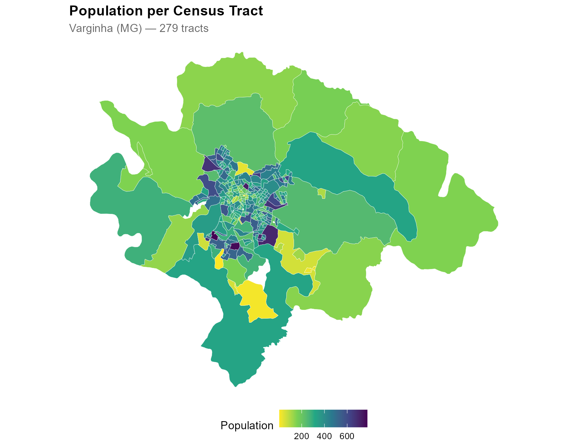
Note the urban-rural gradient: small, densely populated tracts in the city center; large, sparsely populated tracts on the periphery.
6. Electoral Data at Polling Stations
electoral <- br_prepare_electoral(
code_muni_ibge = "3170701",
code_muni_tse = "54135",
uf = "MG", year = 2022,
cargo = "presidente", turno = 1,
what = c("candidates", "turnout")
)The result contains one row per polling station with:
-
Vote columns (
CAND_13,CAND_22, …): votes per candidate (ballot number as suffix; 95 = blank, 96 = null) -
Turnout (
QT_COMPARECIMENTO): total voters who showed up -
Voter age profiles (
votantes_18_20, …,votantes_65_69): TSE’s fine-grained age registration brackets, aggregated to match the 7 census brackets -
Coordinates (
lat,long): geocoded polling station locations -
Column dictionary:
attr(electoral, "column_dictionary")contains metadata for each column (type, cargo, candidate name, party)
The what parameter controls what gets included:
-
"candidates": one column per candidate -
"parties": aggregated by party (PARTY_PT,PARTY_PL, …) -
"turnout":QT_COMPARECIMENTO,QT_APTOS,QT_ABSTENCOES -
"demographics":GENERO_*andEDUC_*columns

7. Calibration Variables: Comparing Source and Target
The calibration variables are the bridge between census tracts and polling stations. The same age brackets are observed at both levels:
- Census: “How many people aged 18–20 live in this tract?” (from IBGE)
- Electoral: “How many registered voters aged 18–20 voted at this station?” (from TSE)
These are the same age brackets we saw distinguishing Rocinha from Copacabana in Section 1. The demographic signature that varies across neighborhoods is precisely what the method uses to calibrate the weights.
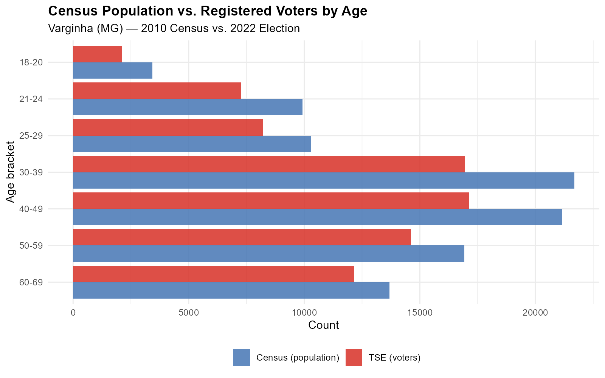
The shapes are similar but totals differ: the census counts residents, the TSE counts registered voters. Not everyone of voting age is registered, and registration rates vary by age bracket.
The optimization finds alpha values so that the interpolated voter age profiles match the census age profiles at each tract. If the weights are correct for demographics, they should also be correct for vote counts.
Part III: Geography
8. Representative Points: From Tracts to Routable Origins
Routing engines need point-to-point queries, but tracts are polygons. We need a single representative point per tract. Three methods are available:
| Method | Function | Guarantee |
|---|---|---|
"centroid" |
sf::st_centroid() |
Fast. May fall outside concave polygons. |
"point_on_surface" |
sf::st_point_on_surface() |
Guaranteed inside. Default. |
"pop_weighted" |
WorldPop raster lookup | Most populated cell. Best for large tracts. |
The choice of representative point matters most for large, irregularly shaped tracts in rural and peri-urban areas. Consider the southern periphery of São Paulo, where census tracts extend over several square kilometers of mixed urban and forested land:

The three-panel comparison shows the same set of large tracts in south São Paulo. The red dots (centroids) frequently fall in uninhabited areas — in the middle of Mata Atlântica forest or in empty fields. The blue dots (point on surface) are guaranteed to be inside the polygon, but may still be far from where people actually live. The green dots (pop-weighted) use the WorldPop population raster to find the most densely populated cell within each tract, placing the representative point where residents actually are.

Zooming into the largest tract, the centroid falls in dense forest while the pop-weighted point correctly identifies the settlement area. This difference can affect travel time calculations by tens of minutes.
pts_pos <- compute_representative_points(tracts_sf,
method = "point_on_surface")
pts_pop <- compute_representative_points(tracts_sf,
method = "pop_weighted")The pop_weighted method downloads the WorldPop Brazil
Constrained 2020 raster (~48 MB, cached) and finds the raster cell with
the highest population density within each tract.
The pop_min_area parameter (default: 1 km²) controls the
threshold: tracts smaller than this use point_on_surface
regardless of the chosen method, since small urban tracts are dense
enough that any interior point is a reasonable proxy.
9. Travel Times: Building the Distance Matrix
9.1 Why walking travel time?
In Brazil, voters are assigned to polling stations near their registered address. On election day, most voters walk to their polling station. This is not merely an assumption of convenience — it is grounded in the geographic design of the Brazilian electoral system and in empirical evidence.
Pereira et al. (2023) studied the introduction of free public transit on election days in Brazilian cities. Their finding that free transit significantly increased turnout implies that the cost of getting to the polls — primarily walking distance — is a real barrier that affects participation. If distance matters for whether people vote at all, it certainly matters for where they vote.
We therefore use realistic walking travel times computed on the OpenStreetMap road network, not Euclidean (straight-line) distances. The routing engine (r5r) accounts for the actual street layout, elevation, one-way streets, pedestrian paths, and physical barriers.
9.2 Euclidean distance vs. walking routes
Why not just use straight-line distance? Because geography creates dramatic discrepancies between Euclidean distance and actual walking time. Two examples:
Example 1: Mountain barrier (Rio de Janeiro)
A point in the Botafogo neighborhood lies at the base of the Corcovado/Sumaré hills. A polling station in Laranjeiras sits on the other side. In a straight line, the distance is modest — but the walking route must navigate around the steep terrain:
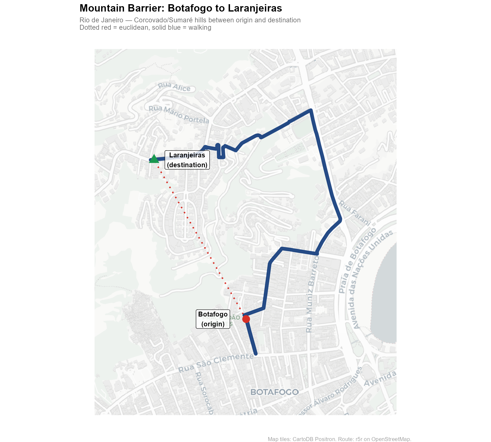
The solid blue line shows the actual walking route computed by r5r on the OSM road network. The dotted red line shows the straight-line distance. In mountainous terrain, these can differ by a factor of 3–5x.
Example 2: Water barrier (Recife)
A point in the Boa Vista neighborhood and a destination in the Brasília Teimosa peninsula are separated by Recife’s waterways. The walking route must navigate around the estuary and cross bridges, adding significant distance compared to the straight line.
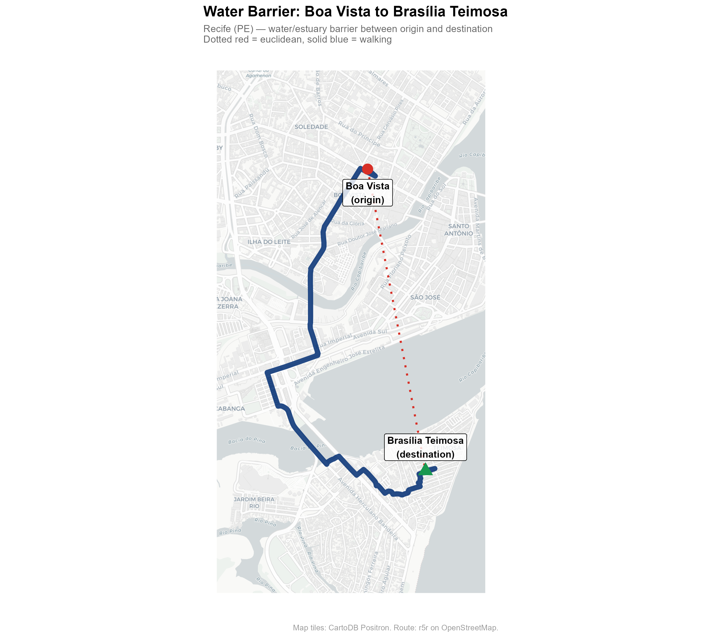
Example 3: Water barrier (Florianópolis)
Florianópolis, capital of Santa Catarina, is split between the mainland and an island in the Atlantic. A point in Coqueiros (mainland) and a destination at Costeira do Pirajubaé (island) are separated by the bay. The walking route must detour to one of the bridges connecting the two sides:

These examples illustrate why Euclidean distance is a poor proxy for actual accessibility — and why the routing engine matters.
9.3 Building the travel time matrix
time_matrix <- compute_travel_times(
tracts_sf = tracts_sf,
points_sf = electoral_sf,
network_path = network_path,
tract_id = "id",
point_id = "id"
)This builds an [N tracts × M stations] matrix of walking travel times in minutes, using the r5r routing engine on OpenStreetMap data.
- Origins: representative points (from Section 8)
- Destinations: polling station coordinates
- Mode: walking (default), configurable
- Max trip duration: 300 minutes; unreachable pairs get this value
The OSM data is downloaded via download_r5r_data(),
which fetches state-level .pbf files and clips them to the
municipality bounding box using osmium.

The heatmap shows spatial structure: a block-diagonal pattern where nearby tract-station pairs have short travel times.
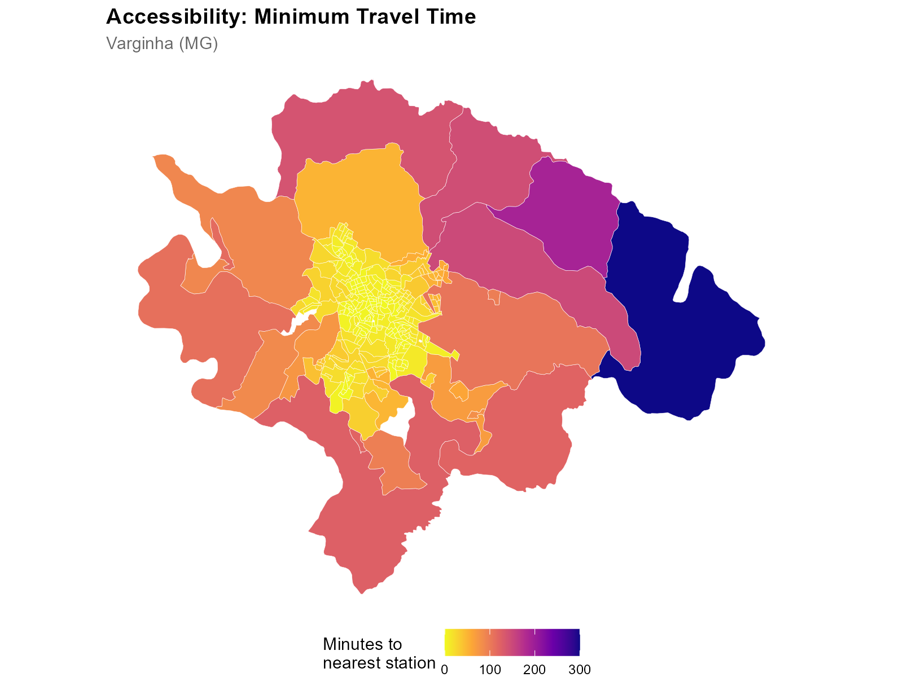
Tracts in the center have short travel times to the nearest station; peripheral tracts are farther away.
The offset: before applying the IDW kernel, we add 1
to all travel times (time_matrix + 1) to avoid singularity
when
.
Part IV: The Weight Matrix
10. The IDW Kernel: Turning Distance into Influence
Intuition: gravitational pull
Think of each polling station as exerting a “gravitational pull” on nearby tracts. Closer stations pull harder. The IDW (Inverse Distance Weighting) kernel translates this intuition into numbers: given a travel time between a tract and a station, it produces a weight that decreases with distance.
A concrete example
Suppose a tract has three nearby stations at 5, 12, and 30 minutes walking distance. How much should each station contribute to this tract’s estimate? With a decay parameter :
tt <- c(5, 12, 30) # travel times in minutes
alpha <- 2
raw_weights <- (tt + 1)^(-alpha)
normalized <- raw_weights / sum(raw_weights)
cat("Travel times:", tt, "minutes\n")
#> Travel times: 5 12 30 minutes
cat("Raw weights: ", round(raw_weights, 5), "\n")
#> Raw weights: 0.02778 0.00592 0.00104
cat("Normalized: ", round(normalized, 3), "\n")
#> Normalized: 0.8 0.17 0.03
cat("The 5-min station gets", round(normalized[1] * 100),
"% of this tract's weight\n")
#> The 5-min station gets 80 % of this tract's weightThe nearest station (5 min) gets the lion’s share of the weight. The 30-minute station contributes very little.
The formula
The raw weight between tract and station :
where:
- : travel time from tract to station (minutes)
- : decay parameter for tract (to be optimized)
How alpha controls the decay
tt_range <- 0:60
alphas <- c(0.5, 1, 2, 5, 10)
decay_df <- do.call(rbind, lapply(alphas, function(a) {
data.frame(time = tt_range, weight = (tt_range + 1)^(-a),
alpha = paste0("alpha = ", a))
}))
decay_df$alpha <- factor(decay_df$alpha,
levels = paste0("alpha = ", alphas))
library(ggplot2)
ggplot(decay_df, aes(x = time, y = weight, color = alpha)) +
geom_line(linewidth = 0.8) +
scale_y_log10() +
labs(title = "Weight Decay Curves",
subtitle = "Higher alpha = steeper decay = more concentrated weights",
x = "Travel time (minutes)", y = "Weight (log scale)",
color = "") +
theme_minimal() +
theme(plot.title = element_text(face = "bold"),
legend.position = "right")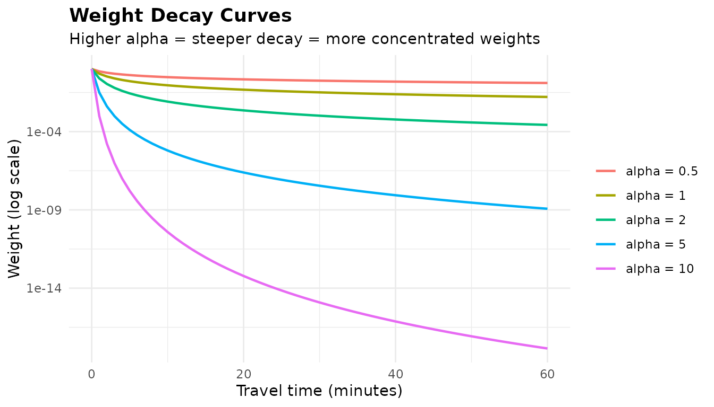
- : nearly flat — all stations contribute almost equally
- : moderate — stations within 10 minutes dominate
- : steep cliff — only the nearest station matters
Why per-tract alpha?
A single global cannot capture the heterogeneity of urban geography. Urban centers have many overlapping station catchments — these tracts need a low to spread weight across several stations. Isolated peripheral tracts with one nearby station need a high to concentrate weight. The optimizer finds the best for each tract independently.
11. Why Single-Sided Standardization Fails
Before introducing the Sinkhorn algorithm, let us understand why simpler approaches do not work. We need to normalize the raw weight matrix so that the weights sum to meaningful quantities. There are two natural choices — and both fail on their own.
11.1 Column-only standardization
The first approach: divide each column by its sum so that each station distributes 100% of its data:
Column sums = 1 (source conservation: every vote is distributed exactly once). But there is no constraint on row sums.
# Toy example: 5 tracts, 3 stations
tt_toy <- matrix(
c(2, 10, 25, 30, 50, # station 1: close to tract 1
15, 3, 12, 28, 45, # station 2: close to tract 2
40, 35, 20, 5, 8), # station 3: close to tracts 4-5
nrow = 5, ncol = 3
)
pop_toy <- c(100, 300, 150, 200, 250) # population per tract
alpha_toy <- rep(2, 5)
W_raw <- (tt_toy + 1)^(-alpha_toy)
# Column standardize
W_col <- t(t(W_raw) / colSums(W_raw))
cat("Column sums (should be 1 — OK):\n")
#> Column sums (should be 1 — OK):
round(colSums(W_col), 4)
#> [1] 1 1 1
cat("\nRow sums (uncontrolled — BAD):\n")
#>
#> Row sums (uncontrolled — BAD):
round(rowSums(W_col), 4)
#> [1] 0.9751 0.9300 0.1439 0.6594 0.2917
cat("\nPopulation shares (what rows should look like):\n")
#>
#> Population shares (what rows should look like):
round(pop_toy / sum(pop_toy) * 3, 4)
#> [1] 0.30 0.90 0.45 0.60 0.75Tract 1 has only 10% of the population but receives a disproportionate share because it is close to station 1. Municipal totals are preserved, but the distribution across tracts is wrong.
11.2 Row-only standardization
The opposite approach: normalize rows to match population shares.
# Row standardize to population-proportional targets
m <- ncol(tt_toy)
row_targets_toy <- pop_toy / sum(pop_toy) * m
W_row <- W_raw * (row_targets_toy / rowSums(W_raw))
cat("Row sums (should match population targets — OK):\n")
#> Row sums (should match population targets — OK):
round(rowSums(W_row), 4)
#> [1] 0.30 0.90 0.45 0.60 0.75
cat("\nColumn sums (should be 1 — BAD):\n")
#>
#> Column sums (should be 1 — BAD):
round(colSums(W_row), 4)
#> [1] 0.5038 1.1226 1.3736Now the rows are correct, but the column sums are wrong. Some stations “distribute” more than 100% of their votes, others less than 100%. The municipal total is no longer conserved: if we multiply these weights by vote counts, we get more (or fewer) total votes than actually existed.
12. Sinkhorn Balancing: Double Conservation
12.1 The idea: balancing a table
Imagine you have a table of estimated phone calls between 5 cities. Each cell contains your best guess of how many calls go from city to city . You also know the total calls from each city (the row totals) and the total calls to each city (the column totals) from telephone billing records.
Your initial estimates don’t match these known totals. But you want to adjust the table so that:
- Each row sums to the known row total
- Each column sums to the known column total
- The relative pattern within each row and column is preserved (if city A calls city B twice as much as city C, this ratio is maintained)
This is exactly what Iterative Proportional Fitting (IPF) does. It alternates between scaling rows to match row totals and scaling columns to match column totals. After a few rounds, both sets of totals are satisfied simultaneously.
In our context:
- The table is the weight matrix (tracts × stations)
- Row totals are population-proportional targets ()
- Column totals are all 1 (each station distributes 100%)
- The initial pattern comes from the IDW kernel (travel-time-based weights)
12.2 Historical context: from demography to optimal transport
The idea of alternating row and column normalization has been discovered independently in several fields, each giving it a different name:
- Iterative Proportional Fitting (IPF): Deming & Stephan (1940) introduced it for adjusting census contingency tables to match known marginal totals — directly related to our application.
- RAS method: economists use it to update input-output tables when only row and column totals are available for a new period.
- Matrix balancing: transportation planners apply it for trip distribution — fitting an origin-destination matrix to known trip generation and attraction totals.
- Sinkhorn-Knopp algorithm: Richard Sinkhorn (1964) proved the key convergence result: any matrix with all positive entries can be made doubly stochastic by this procedure. The result was later extended to rectangular matrices with arbitrary prescribed marginals.
- Optimal transport: in the machine learning literature, the Sinkhorn algorithm is the standard method for computing entropy- regularized optimal transport (Cuturi, 2013).
All describe the same procedure: alternate row and column
normalization until both marginal constraints are satisfied. The
convergence is guaranteed when
sum(row_targets) = sum(col_targets), and the balanced
matrix is unique.
12.3 Step-by-step worked example
Let us trace the algorithm by hand on a small example. We have a 3×3 raw weight matrix and want to achieve specific row and column sums:
# Small 3x3 example for hand-tracing
W_ex <- matrix(c(
0.8, 0.1, 0.05, # tract 1: near station 1
0.3, 0.6, 0.1, # tract 2: near station 2
0.05, 0.2, 0.9 # tract 3: near station 3
), nrow = 3, byrow = TRUE)
row_targets_ex <- c(1.5, 0.9, 0.6) # population-proportional
col_targets_ex <- c(1, 1, 1) # source conservation
cat("=== Initial matrix ===\n")
#> === Initial matrix ===
print(round(W_ex, 3))
#> [,1] [,2] [,3]
#> [1,] 0.80 0.1 0.05
#> [2,] 0.30 0.6 0.10
#> [3,] 0.05 0.2 0.90
cat("Row sums:", round(rowSums(W_ex), 3), "\n")
#> Row sums: 0.95 1 1.15
cat("Targets: ", row_targets_ex, "\n")
#> Targets: 1.5 0.9 0.6
# --- Iteration 1: Row scaling ---
cat("\n=== Iteration 1: Scale rows ===\n")
#>
#> === Iteration 1: Scale rows ===
row_factors <- row_targets_ex / rowSums(W_ex)
cat("Row scale factors:", round(row_factors, 3), "\n")
#> Row scale factors: 1.579 0.9 0.522
W_ex <- W_ex * row_factors # multiply each row
cat("After row scaling:\n")
#> After row scaling:
print(round(W_ex, 3))
#> [,1] [,2] [,3]
#> [1,] 1.263 0.158 0.079
#> [2,] 0.270 0.540 0.090
#> [3,] 0.026 0.104 0.470
cat("Row sums now:", round(rowSums(W_ex), 3), "(match targets)\n")
#> Row sums now: 1.5 0.9 0.6 (match targets)
cat("Col sums now:", round(colSums(W_ex), 3), "(not yet 1)\n")
#> Col sums now: 1.559 0.802 0.639 (not yet 1)
# --- Iteration 1: Column scaling ---
cat("\n=== Iteration 1: Scale columns ===\n")
#>
#> === Iteration 1: Scale columns ===
col_factors <- col_targets_ex / colSums(W_ex)
cat("Col scale factors:", round(col_factors, 3), "\n")
#> Col scale factors: 0.641 1.247 1.566
W_ex <- t(t(W_ex) * col_factors)
cat("After column scaling:\n")
#> After column scaling:
print(round(W_ex, 3))
#> [,1] [,2] [,3]
#> [1,] 0.810 0.197 0.124
#> [2,] 0.173 0.673 0.141
#> [3,] 0.017 0.130 0.735
cat("Row sums now:", round(rowSums(W_ex), 3), "(shifted slightly)\n")
#> Row sums now: 1.131 0.987 0.882 (shifted slightly)
cat("Col sums now:", round(colSums(W_ex), 3), "(match targets)\n")
#> Col sums now: 1 1 1 (match targets)
# --- Iteration 2 ---
cat("\n=== Iteration 2: Scale rows again ===\n")
#>
#> === Iteration 2: Scale rows again ===
row_factors <- row_targets_ex / rowSums(W_ex)
W_ex <- W_ex * row_factors
col_factors <- col_targets_ex / colSums(W_ex)
W_ex <- t(t(W_ex) * col_factors)
cat("After iteration 2:\n")
#> After iteration 2:
print(round(W_ex, 3))
#> [,1] [,2] [,3]
#> [1,] 0.864 0.271 0.207
#> [2,] 0.127 0.637 0.162
#> [3,] 0.009 0.092 0.631
cat("Row sums:", round(rowSums(W_ex), 4), "\n")
#> Row sums: 1.342 0.9261 0.7319
cat("Col sums:", round(colSums(W_ex), 4), "\n")
#> Col sums: 1 1 1
cat("Max error:", round(max(
abs(rowSums(W_ex) - row_targets_ex),
abs(colSums(W_ex) - col_targets_ex)
), 6), "\n")
#> Max error: 0.157996After just 2 iterations, both row and column sums are very close to their targets. The relative pattern within each row is preserved: tract 1 still gets most of its weight from station 1, tract 3 from station 3. But the absolute values have been adjusted so that the population and source constraints are satisfied.
12.4 Convergence
The algorithm converges rapidly — typically to machine precision within 15–50 iterations:
# Convergence demo with the 5-tract toy example
m <- ncol(tt_toy)
row_targets <- pop_toy / sum(pop_toy) * m
col_targets <- rep(1, m)
W <- W_raw # from section 11
max_err_history <- numeric(50)
for (k in 1:50) {
rs <- rowSums(W); rs[rs == 0] <- 1
W <- W * (row_targets / rs)
cs <- colSums(W); cs[cs == 0] <- 1
W <- t(t(W) * (col_targets / cs))
max_err_history[k] <- max(
abs(rowSums(W) - row_targets),
abs(colSums(W) - col_targets)
)
}
conv_df <- data.frame(iteration = 1:50, max_error = max_err_history)
ggplot(conv_df, aes(x = iteration, y = max_error)) +
geom_line(color = "#4575b4", linewidth = 0.8) +
geom_point(color = "#4575b4", size = 1) +
scale_y_log10() +
labs(title = "Sinkhorn Convergence",
subtitle = "Marginal error converges to machine precision in ~15 iterations",
x = "Iteration", y = "Max marginal error (log scale)") +
theme_minimal() +
theme(plot.title = element_text(face = "bold"))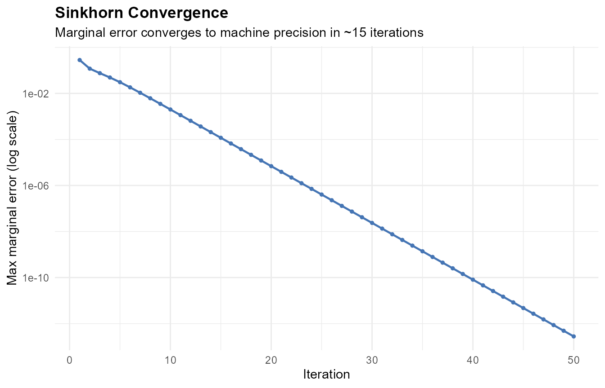
12.5 The formal algorithm
Using the package function:
W_balanced <- sinkhorn_balance(W_raw,
row_targets = row_targets,
col_targets = col_targets
)
cat("Row sums (should match targets):\n")
#> Row sums (should match targets):
cbind(target = round(row_targets, 4),
actual = round(rowSums(W_balanced), 4))
#> target actual
#> [1,] 0.30 0.30
#> [2,] 0.90 0.90
#> [3,] 0.45 0.45
#> [4,] 0.60 0.60
#> [5,] 0.75 0.75
cat("\nColumn sums (should be 1):\n")
#>
#> Column sums (should be 1):
round(colSums(W_balanced), 4)
#> [1] 1 1 1The algorithm pseudocode:
W <- W_raw
for iter in 1..max_iter:
W <- W * (row_targets / rowSums(W)) # scale rows
W <- t(t(W) * (col_targets / colSums(W))) # scale columns
if max marginal error < tol: break12.6 Before and after: what Sinkhorn changes
W_std_long <- expand.grid(tract = 1:5, station = 1:3)
W_std_long$weight <- as.vector(W_col)
W_std_long$method <- "Column standardized"
W_bal_long <- expand.grid(tract = 1:5, station = 1:3)
W_bal_long$weight <- as.vector(W_balanced)
W_bal_long$method <- "Sinkhorn balanced"
both <- rbind(W_std_long, W_bal_long)
both$method <- factor(both$method,
levels = c("Column standardized", "Sinkhorn balanced"))
ggplot(both, aes(x = station, y = tract, fill = weight)) +
geom_tile(color = "white") +
geom_text(aes(label = round(weight, 3)), size = 3) +
facet_wrap(~method) +
scale_fill_viridis_c(option = "viridis", direction = -1) +
labs(title = "Weight Matrix: Before and After Sinkhorn",
x = "Station", y = "Tract") +
theme_minimal() +
theme(plot.title = element_text(face = "bold"))
Sinkhorn redistributes weight: over-weighted tracts (near many stations) get less, under-weighted tracts get more. The geographic “shape” of each row is preserved, but the “scale” changes to match population.
Key properties:
- The balanced matrix is unique for given row/column targets
- Non-negative: if input is non-negative, output is non-negative
-
Convergence guaranteed when
sum(row_targets) = sum(col_targets) - Unreachable tracts (all-zero rows) remain zero and are flagged
12.7 Per-Bracket Sinkhorn: Matching Each Age Group Separately
The problem: age groups have different geographies
Think about the spatial distribution of voters by age. Young adults (18–24) cluster near universities, cheap rental apartments, and transit corridors. Elderly voters (60–69) concentrate in established neighborhoods, retirement communities, and areas with healthcare facilities. These spatial patterns differ substantially — yet a single weight matrix must allocate all age groups simultaneously.
With aggregate Sinkhorn (Sections 12.1–12.6), the weight matrix has one set of row targets: total population per tract, summed across all age brackets. The optimizer must find one set of weights that simultaneously matches 7 (or 28, with full calibration) different demographic distributions. This is an inherent compromise: weights that correctly distribute 18–20 year-olds may systematically misallocate 60–69 year-olds, and vice versa.
Consider a concrete scenario. Tract A is near a university with many young voters at station 1. Tract B is in a retirement neighborhood with elderly voters at station 3. Both tracts might have similar total populations, but their age profiles point to different stations. An aggregate weight matrix that averages over all age groups cannot capture this distinction.
The per-bracket extension
Per-bracket Sinkhorn solves this by running a separate transport problem for each demographic bracket . Instead of one weight matrix , we build bracket-specific matrices , each with its own row and column constraints:
For each bracket :
- Row targets: — the census population of bracket in tract , rescaled so that the total row mass matches the total column mass for bracket .
- Column targets: — the number of voters of bracket at station .
- Sinkhorn balance: apply the standard algorithm from Section 12 with targets on the same IDW kernel to produce .
The rescaling in step 1 ensures that , which is the condition for Sinkhorn convergence.
Aggregate and finalize:
followed by a final aggregate Sinkhorn pass with column targets and row targets to enforce overall source conservation (each station distributes exactly 100% of its data).
Why this works better
Each bracket’s transport problem is simpler: it only needs to match one demographic column. The young-voter transport will naturally assign more weight to nearby stations with many young voters. The elderly-voter transport does the same for elderly voters. These bracket-specific solutions will generally differ because the spatial distribution of each age group is different.
The aggregation step combines these bracket-specific patterns. A tract near a university gets more weight from the young-bracket transport on nearby youth-heavy stations, while still receiving appropriate weight from the elderly-bracket transport on nearby elderly-heavy stations. The final Sinkhorn pass ensures overall column sums remain 1.
Worked example
We extend the toy example from Section 11 with two brackets whose spatial distributions differ sharply:
# Bracket 1 ("young"): concentrated near station 1
# Bracket 2 ("old"): concentrated near station 3
pop_young <- c(60, 100, 50, 30, 20) # young pop per tract
pop_old <- c(40, 200, 100, 170, 230) # old pop per tract
src_young <- c(150, 70, 40) # young voters per station
src_old <- c(100, 330, 310) # old voters per station
pop_mat_toy <- cbind(young = pop_young, old = pop_old)
src_mat_toy <- cbind(young = src_young, old = src_old)
# Per-bracket weights: each bracket gets its own Sinkhorn transport
W_total <- matrix(0, 5, 3)
for (k in 1:2) {
rb <- pop_mat_toy[, k]
cb <- src_mat_toy[, k]
rb_scaled <- rb / sum(rb) * sum(cb) # rescale so sum(r) == sum(c)
W_k <- sinkhorn_balance(W_raw, rb_scaled, cb)
W_total <- W_total + W_k
}
# Final aggregate Sinkhorn to enforce column-sum = 1
pop_total_toy <- rowSums(pop_mat_toy)
m_toy <- ncol(W_total)
rt <- pop_total_toy / sum(pop_total_toy) * m_toy
W_pb <- sinkhorn_balance(W_total, rt, rep(1, m_toy))
# Compare: aggregate-only vs per-bracket
W_agg <- sinkhorn_balance(W_raw, rt, rep(1, m_toy))
# Interpolate BOTH brackets
young_hat_agg <- as.numeric(W_agg %*% src_young)
young_hat_pb <- as.numeric(W_pb %*% src_young)
old_hat_agg <- as.numeric(W_agg %*% src_old)
old_hat_pb <- as.numeric(W_pb %*% src_old)
cat("=== Young bracket ===\n")
#> === Young bracket ===
cat("Census truth: ", pop_young, "\n")
#> Census truth: 60 100 50 30 20
cat("Aggregate Sinkhorn: ", round(young_hat_agg), "\n")
#> Aggregate Sinkhorn: 45 83 45 40 48
cat("Per-bracket Sinkhorn: ", round(young_hat_pb), "\n")
#> Per-bracket Sinkhorn: 45 87 46 38 45
cat("Aggregate SSE: ", round(sum((young_hat_agg - pop_young)^2)), "\n")
#> Aggregate SSE: 1408
cat("Per-bracket SSE: ", round(sum((young_hat_pb - pop_young)^2)), "\n")
#> Per-bracket SSE: 1095
cat("\n=== Old bracket ===\n")
#>
#> === Old bracket ===
cat("Census truth: ", pop_old, "\n")
#> Census truth: 40 200 100 170 230
cat("Aggregate Sinkhorn: ", round(old_hat_agg), "\n")
#> Aggregate Sinkhorn: 31 239 107 159 204
cat("Per-bracket Sinkhorn: ", round(old_hat_pb), "\n")
#> Per-bracket Sinkhorn: 31 228 105 164 212
cat("Aggregate SSE: ", round(sum((old_hat_agg - pop_old)^2)), "\n")
#> Aggregate SSE: 2466
cat("Per-bracket SSE: ", round(sum((old_hat_pb - pop_old)^2)), "\n")
#> Per-bracket SSE: 1250
cat("\n=== Total SSE across both brackets ===\n")
#>
#> === Total SSE across both brackets ===
total_agg <- sum((young_hat_agg - pop_young)^2) +
sum((old_hat_agg - pop_old)^2)
total_pb <- sum((young_hat_pb - pop_young)^2) +
sum((old_hat_pb - pop_old)^2)
cat("Aggregate:", round(total_agg), "\n")
#> Aggregate: 3874
cat("Per-bracket:", round(total_pb), "\n")
#> Per-bracket: 2345The per-bracket approach recovers both demographic distributions more accurately because each bracket’s transport is tailored to its own spatial pattern, rather than being forced into a one-size-fits-all compromise.
# Visual comparison: aggregate vs per-bracket recovery
comparison_df <- data.frame(
tract = rep(1:5, 4),
value = c(pop_young, pop_old, young_hat_pb, old_hat_pb),
bracket = rep(c("Young", "Old", "Young", "Old"), each = 5),
source = rep(c("Census truth", "Census truth",
"Per-bracket estimate", "Per-bracket estimate"),
each = 5)
)
ggplot(comparison_df,
aes(x = factor(tract), y = value, fill = source)) +
geom_col(position = "dodge", width = 0.7) +
facet_wrap(~bracket, scales = "free_y") +
scale_fill_manual(values = c("Census truth" = "#4575b4",
"Per-bracket estimate" = "#fdae61")) +
labs(title = "Per-Bracket Sinkhorn: Recovery of Age-Group Profiles",
x = "Tract", y = "Population", fill = "") +
theme_minimal() +
theme(plot.title = element_text(face = "bold"),
legend.position = "bottom")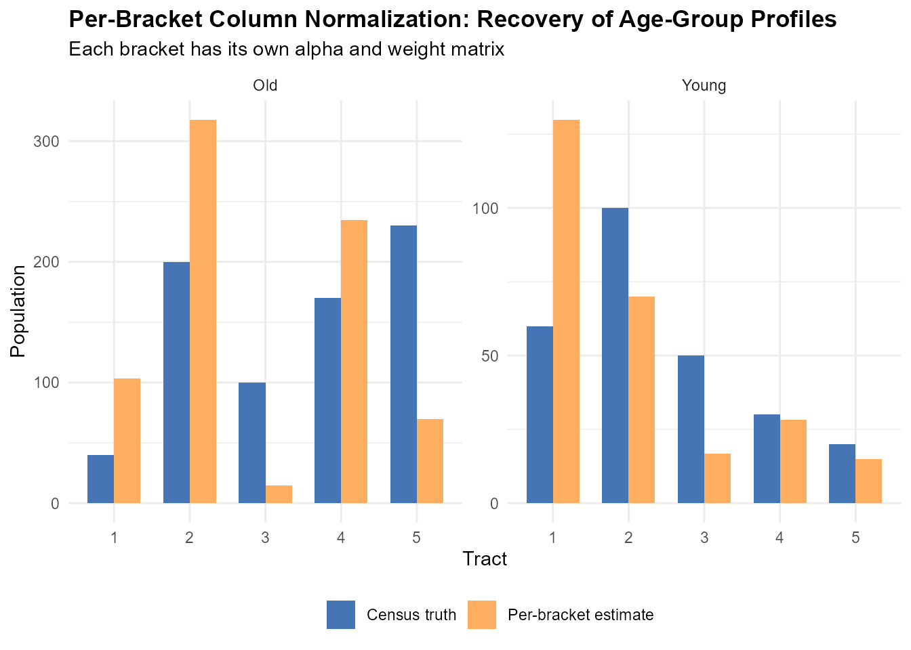
Connection to the optimizer
During PB-SGD optimization (Section 14), the per-bracket Sinkhorn is
performed in log-domain on 3D tensors of shape
[ka × batch × m], where ka is the number of
active demographic brackets and batch is the number of
sampled tracts per SGD step. This vectorizes all
separate transport problems into a single batched matrix computation on
GPU or CPU, making it nearly as fast as a single aggregate Sinkhorn
pass. Section 14.3 derives the log-domain Sinkhorn updates, and Section
14.4 presents the complete 3D-tensor pseudocode.
After optimization, sinkhorn_weights() builds the final
weight matrix using the same per-bracket logic with full convergence (up
to 1000 Sinkhorn iterations, or until marginal error falls below
):
W <- sinkhorn_weights(time_matrix, alpha, offset = 1,
row_targets = row_targets,
pop_matrix = pop_matrix,
source_matrix = source_matrix)When pop_matrix and source_matrix are
provided, the function automatically uses per-bracket mode. Without
them, it falls back to single-Sinkhorn mode for backward
compatibility.
Part V: Calibration and Optimization
13. The Calibration Objective
13.1 The key insight
We have all the ingredients: travel times, an IDW kernel parametrized by , and Sinkhorn balancing to enforce constraints. Now we need to find the right .
Here is the calibration logic: if the weights are correct, then interpolating voter age profiles from stations should recover the census age profiles at each tract.
Consider a concrete example. Census data says tract X has 200 people aged 30–39. If our weights are good, then multiplying the weight row for tract X by the station-level voter counts for the 30–39 age bracket should give us approximately 200. If it gives 150 or 300, the weights are wrong — the geographic allocation is biased.
The optimization finds values that minimize this mismatch across all tracts and all age brackets simultaneously.
13.2 The iterative procedure
The optimization is a loop:

In words:
- Initialize: set for all tracts (moderate decay)
- Build the IDW kernel: compute raw weights from travel times and current
- Sinkhorn balance: enforce row and column constraints
- Interpolate demographics: multiply balanced weights by station-level age profiles
- Compare with census: compute the squared error between interpolated and census age profiles
- Adjust : use the gradient (via automatic differentiation) to nudge in the direction that reduces error
- Repeat until the error stops decreasing
Each iteration of this loop evaluates the complete forward pass: .
13.3 The formal objective
where:
- — interpolated voter demographics per tract, with built via per-bracket Sinkhorn (Section 12.7)
- — census demographics per tract
- = demographic bracket index ( for age-only calibration, for full gender × literacy × age calibration)
The weight matrix is the sum of per-bracket transport matrices , each balanced to match bracket ’s row/column targets, followed by a final aggregate Sinkhorn pass.
# Simplified case: all tracts share the same alpha
tt_adj <- tt_toy + 1
pop_matrix_toy <- matrix(pop_toy, ncol = 1)
src_matrix_toy <- matrix(c(250, 400, 350), ncol = 1)
alpha_range <- seq(0.1, 8, by = 0.1)
sse_values <- sapply(alpha_range, function(a) {
sinkhorn_objective(
alpha = rep(a, 5),
time_matrix = tt_adj,
pop_matrix = pop_matrix_toy,
source_matrix = src_matrix_toy,
row_targets = pop_toy / sum(pop_toy) * 3,
sk_iter = 50
)
})
#> Warning: Sinkhorn did not converge after 50 iterations (max marginal error:
#> 1.09e-10)
#> Warning: Sinkhorn did not converge after 50 iterations (max marginal error:
#> 1.68e-10)
#> Warning: Sinkhorn did not converge after 50 iterations (max marginal error:
#> 2.52e-10)
#> Warning: Sinkhorn did not converge after 50 iterations (max marginal error:
#> 3.68e-10)
#> Warning: Sinkhorn did not converge after 50 iterations (max marginal error:
#> 5.28e-10)
#> Warning: Sinkhorn did not converge after 50 iterations (max marginal error:
#> 7.43e-10)
#> Warning: Sinkhorn did not converge after 50 iterations (max marginal error:
#> 1.03e-09)
#> Warning: Sinkhorn did not converge after 50 iterations (max marginal error:
#> 1.40e-09)
#> Warning: Sinkhorn did not converge after 50 iterations (max marginal error:
#> 1.88e-09)
#> Warning: Sinkhorn did not converge after 50 iterations (max marginal error:
#> 2.48e-09)
#> Warning: Sinkhorn did not converge after 50 iterations (max marginal error:
#> 3.24e-09)
#> Warning: Sinkhorn did not converge after 50 iterations (max marginal error:
#> 4.19e-09)
#> Warning: Sinkhorn did not converge after 50 iterations (max marginal error:
#> 5.35e-09)
#> Warning: Sinkhorn did not converge after 50 iterations (max marginal error:
#> 6.76e-09)
#> Warning: Sinkhorn did not converge after 50 iterations (max marginal error:
#> 8.45e-09)
#> Warning: Sinkhorn did not converge after 50 iterations (max marginal error:
#> 1.05e-08)
#> Warning: Sinkhorn did not converge after 50 iterations (max marginal error:
#> 1.29e-08)
#> Warning: Sinkhorn did not converge after 50 iterations (max marginal error:
#> 1.57e-08)
#> Warning: Sinkhorn did not converge after 50 iterations (max marginal error:
#> 1.90e-08)
#> Warning: Sinkhorn did not converge after 50 iterations (max marginal error:
#> 2.28e-08)
#> Warning: Sinkhorn did not converge after 50 iterations (max marginal error:
#> 2.72e-08)
#> Warning: Sinkhorn did not converge after 50 iterations (max marginal error:
#> 3.22e-08)
#> Warning: Sinkhorn did not converge after 50 iterations (max marginal error:
#> 3.79e-08)
#> Warning: Sinkhorn did not converge after 50 iterations (max marginal error:
#> 4.43e-08)
#> Warning: Sinkhorn did not converge after 50 iterations (max marginal error:
#> 5.16e-08)
#> Warning: Sinkhorn did not converge after 50 iterations (max marginal error:
#> 5.98e-08)
#> Warning: Sinkhorn did not converge after 50 iterations (max marginal error:
#> 6.89e-08)
#> Warning: Sinkhorn did not converge after 50 iterations (max marginal error:
#> 7.90e-08)
#> Warning: Sinkhorn did not converge after 50 iterations (max marginal error:
#> 9.03e-08)
#> Warning: Sinkhorn did not converge after 50 iterations (max marginal error:
#> 1.03e-07)
#> Warning: Sinkhorn did not converge after 50 iterations (max marginal error:
#> 1.16e-07)
#> Warning: Sinkhorn did not converge after 50 iterations (max marginal error:
#> 1.32e-07)
#> Warning: Sinkhorn did not converge after 50 iterations (max marginal error:
#> 1.48e-07)
#> Warning: Sinkhorn did not converge after 50 iterations (max marginal error:
#> 1.66e-07)
#> Warning: Sinkhorn did not converge after 50 iterations (max marginal error:
#> 1.86e-07)
#> Warning: Sinkhorn did not converge after 50 iterations (max marginal error:
#> 2.08e-07)
#> Warning: Sinkhorn did not converge after 50 iterations (max marginal error:
#> 2.31e-07)
#> Warning: Sinkhorn did not converge after 50 iterations (max marginal error:
#> 2.57e-07)
#> Warning: Sinkhorn did not converge after 50 iterations (max marginal error:
#> 2.85e-07)
#> Warning: Sinkhorn did not converge after 50 iterations (max marginal error:
#> 3.15e-07)
#> Warning: Sinkhorn did not converge after 50 iterations (max marginal error:
#> 3.48e-07)
#> Warning: Sinkhorn did not converge after 50 iterations (max marginal error:
#> 3.84e-07)
#> Warning: Sinkhorn did not converge after 50 iterations (max marginal error:
#> 4.23e-07)
#> Warning: Sinkhorn did not converge after 50 iterations (max marginal error:
#> 4.64e-07)
#> Warning: Sinkhorn did not converge after 50 iterations (max marginal error:
#> 5.09e-07)
#> Warning: Sinkhorn did not converge after 50 iterations (max marginal error:
#> 5.58e-07)
#> Warning: Sinkhorn did not converge after 50 iterations (max marginal error:
#> 6.11e-07)
#> Warning: Sinkhorn did not converge after 50 iterations (max marginal error:
#> 6.68e-07)
#> Warning: Sinkhorn did not converge after 50 iterations (max marginal error:
#> 7.29e-07)
ggplot(data.frame(alpha = alpha_range, sse = sse_values),
aes(x = alpha, y = sse)) +
geom_line(color = "#4575b4", linewidth = 0.8) +
geom_vline(xintercept = alpha_range[which.min(sse_values)],
linetype = "dashed", color = "#d73027") +
labs(title = "Objective Function Landscape",
subtitle = sprintf(
"Minimum at alpha = %.1f (shared across all tracts)",
alpha_range[which.min(sse_values)]),
x = expression(alpha), y = "SSE") +
theme_minimal() +
theme(plot.title = element_text(face = "bold"))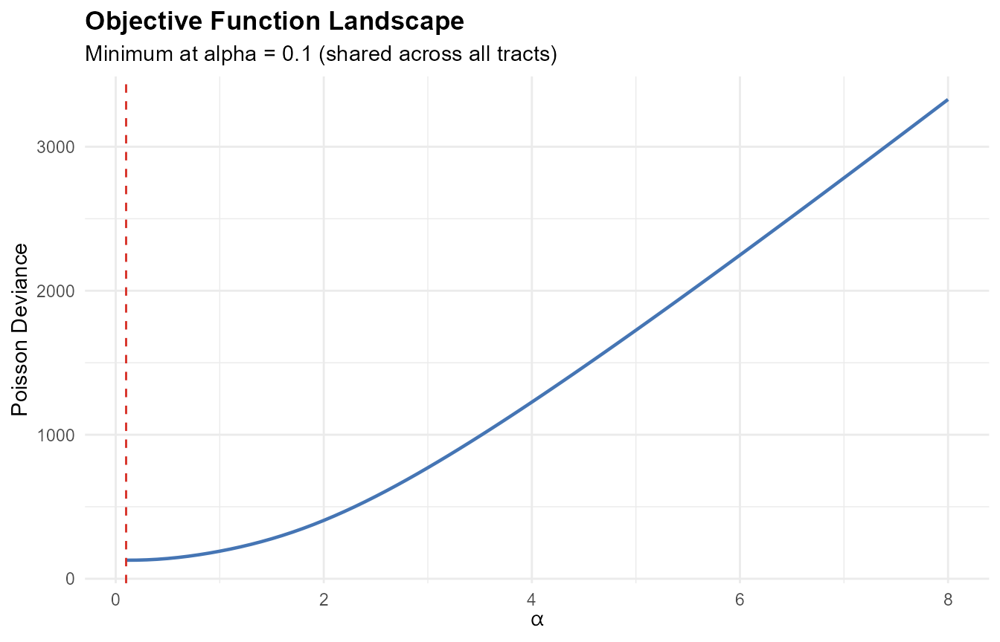
The landscape has a clear minimum. In practice, each tract has its own alpha, creating a high-dimensional optimization problem.
13.4 Sinkhorn iterations during optimization
(sk_iter)
The objective function depends on Sinkhorn-balanced weights. In principle, exact Sinkhorn convergence would require hundreds of iterations per evaluation. But during SGD optimization, we only need gradients that point in approximately the right direction — not exact ones. This opens a key tradeoff:
-
Too few iterations (e.g.,
sk_iter = 3): the per-bracket transport is poorly approximated. Row and column targets are far from satisfied. Gradients are noisy and may point in wrong directions, causing the optimizer to diverge or get stuck. -
Too many iterations (e.g.,
sk_iter = 50): the transport is nearly exact, but memory grows as because torch must store intermediate tensors for backpropagation through all unrolled iterations. On GPU, this can exceed available VRAM for large cities. -
The sweet spot (
sk_iter = 15): experiments across municipalities of varying sizes (Varginha, Niteroi, Belo Horizonte, São Paulo) showed that 15 iterations achieve near-optimal spatial variation in the resulting alpha vectors while keeping memory usage well within GPU limits. Beyond 15, the marginal improvement in gradient quality is negligible.
The default sk_iter = 15 balances gradient accuracy
against memory cost. The final weight computation after
optimization (via sinkhorn_weights()) uses full
convergence-based Sinkhorn with up to 1000 iterations, so the final
interpolation is always exact regardless of sk_iter during
training.
14. Optimization: Per-Bracket SGD with Log-Domain Sinkhorn
14.1 Why automatic differentiation?
The objective function involves iterations of Sinkhorn scaling. Each iteration multiplies, divides, sums — all standard operations. But writing the analytical gradient of the loss function through unrolled Sinkhorn iterations by hand is tedious and error-prone.
Torch’s automatic differentiation handles this: we define the forward pass (kernel → Sinkhorn → interpolation → loss), and torch computes the gradient of the loss with respect to automatically by recording every operation and applying the chain rule backward.
14.2 Why log-domain Sinkhorn?
The standard Sinkhorn algorithm multiplies weights directly. But when is large and travel times vary widely, some weights become astronomically small:
# Demonstrate the underflow problem
tt_demo <- c(5, 20, 60, 120, 200) # travel times (minutes)
alpha_high <- 8
raw <- (tt_demo + 1)^(-alpha_high)
cat("Raw weights at alpha = 8:\n")
#> Raw weights at alpha = 8:
cat(formatC(raw, format = "e", digits = 2), "\n")
#> 5.95e-07 2.64e-11 5.22e-15 2.18e-17 3.75e-19
cat("\nIn float32, values below ~1.2e-38 become exactly 0\n")
#>
#> In float32, values below ~1.2e-38 become exactly 0
cat("Zero weights cause division by zero in Sinkhorn scaling\n")
#> Zero weights cause division by zero in Sinkhorn scalingIn 32-bit floating point (standard for GPU computation), numbers smaller than about underflow to zero. When a weight becomes exactly zero, the Sinkhorn row/column scaling produces , and the optimization collapses.
The log-domain solution: instead of storing the tiny weights directly, store their logarithms. A weight of has , which is perfectly representable in float32.
14.3 Deriving the log-domain Sinkhorn updates
Start from the standard Sinkhorn row update. In the classical algorithm, we maintain scaling vectors and such that :
Take the logarithm of both sides:
Rewrite the sum inside the log by expressing everything in log space:
The operation is the logsumexp function — a numerically stable primitive available in torch:
Similarly, the column update (with column target , so ):
And the log-kernel is simply:
14.4 The complete per-bracket log-domain Sinkhorn algorithm
The optimizer performs Sinkhorn transport per bracket on 3D tensors. Before reading the pseudocode, it helps to understand the tensor shapes involved:
| Symbol | Shape | Meaning |
|---|---|---|
log_t |
Log travel times (precomputed once) | |
alpha |
Decay parameters (what we’re optimizing) | |
P |
Census population per tract and bracket | |
V |
Voter counts per station and bracket | |
r_mat |
Row targets: bracket × tract | |
c_mat |
Column targets: bracket × station | |
log_K_3d |
3D log-kernel (broadcast) | |
log_u |
Log row-scaling factors | |
log_v |
Log column-scaling factors | |
W_all |
Per-bracket weight tensors |
The first dimension () indexes demographic brackets. The second dimension () indexes the sampled tracts in the mini-batch. The third dimension () indexes stations. All brackets share the same log-kernel — only the row/column targets differ — so the Sinkhorn updates can be computed in a single vectorized operation across brackets.
Input: log_t[n,m], alpha[n], P[n,ka], V[m,ka], sk_iter, batch_size
# Preprocess: per-bracket row/column targets (done once)
for each bracket b in 1..ka:
r_mat[b,:] = P[:,b] / sum(P[:,b]) * sum(V[:,b]) # rescale rows
c_mat[b,:] = V[:,b]
# --- PB-SGD step (repeated for max_steps iterations) ---
# Sample mini-batch of b tracts
idx = sample(1..n, batch_size)
r_batch = r_mat[:, idx] # [ka x b]
# Column scaling: adjust column targets to match the mini-batch
# (see explanation below)
c_batch = c_mat * (rowSums(r_batch) / rowSums(r_mat)) # [ka x m]
# Build 3D log-targets (unsqueeze for broadcasting)
log_r_3d = log(r_batch) # [ka x b x 1]
log_c_3d = log(c_batch) # [ka x 1 x m]
# Log-kernel for batch (same kernel for all brackets)
log_K[i,j] = -alpha[idx[i]] * log_t[idx[i], j] # [b x m]
log_K_3d = log_K expanded to [ka x b x m] # broadcast across brackets
# Log-domain Sinkhorn iterations (per bracket, batched)
log_u = zeros(ka, b, 1)
log_v = zeros(ka, 1, m)
for k = 1 to sk_iter:
log_u = log_r_3d - logsumexp_j(log_K_3d + log_v) # row update
log_v = log_c_3d - logsumexp_i(log_K_3d + log_u) # column update
# Recover weights, aggregate brackets, and column-normalize
W_all = exp(log_u + log_K_3d + log_v) # [ka x b x m]
W_total = sum(W_all, dim=bracket) # [b x m]
W_norm = W_total / colSums(W_total) # column-normalize
# Compute loss (scaled for batch → full-data estimate)
V_scaled = V * (b / n)
V_hat = W_norm @ V_scaled # [b x ka]
loss = sum((V_hat - P[idx,:])^2) * (n / b)Every operation — log, exp, logsumexp, matrix multiply, subtraction,
squaring — has a defined backward pass in torch. The gradient
flows backward through all sk_iter Sinkhorn iterations
automatically.
Why scale the column targets? When we sample a
mini-batch of
tracts from the full set of
,
the row targets for the batch (r_batch) sum to less than
the full row targets (r_mat). But the column targets (voter
counts at stations) remain the same — we haven’t sampled stations, only
tracts. If we used the full column targets, the Sinkhorn problem would
be inconsistent: row sums would be much smaller than column sums, and
the algorithm would fail to converge. The fix is to scale each bracket’s
column targets by the ratio
,
so that the mini-batch Sinkhorn problem has matching row and column
totals. This ensures that each mini-batch step solves a well-posed
transport problem that is consistent with the full-data objective.
Key design choices:
-
3D tensors: all
brackets are batched into a single
[ka × b × m]tensor, enabling efficient GPU parallelism - Per-bracket targets: each bracket has its own row/column targets, giving each age group its own spatial transport solution
-
Batch scaling:
V_scaledis scaled byb/nand the loss byn/bso that the gradient is an unbiased estimate of the full-data gradient, regardless of batch size
14.5 PB-SGD: Per-Bracket Stochastic Gradient Descent
We use ADAM (Adaptive Moment Estimation) as the underlying optimizer, with mini-batch sampling and per-bracket Sinkhorn transport. At each of the 800 PB-SGD steps:
-
Sample a mini-batch of
batch_sizetracts (default 500) -
Per-bracket Sinkhorn: each demographic column gets
its own log-domain Sinkhorn transport on
[ka x batch x m]tensors - Aggregate bracket contributions and column-normalize
- Compute loss: scaled SSE between interpolated and observed values
- Gradient masking: only update optimizer moments for sampled tracts
- Gradient clipping at norm 5.0 prevents divergence
-
Alpha clamped to
[lower_bound, upper_bound](default [0.01, 20])
The learning rate halves at steps 200, 400, and 600.
optim_result <- optimize_alpha(
time_matrix = time_matrix,
pop_matrix = pop_matrix,
source_matrix = source_matrix,
row_targets = row_targets,
batch_size = 500, # mini-batch size (full-batch if n <= 500)
sk_iter = 15, # Sinkhorn iterations per step
max_steps = 800, # total SGD steps
lr_init = 0.05, # initial learning rate
use_gpu = FALSE # CPU for small problems
)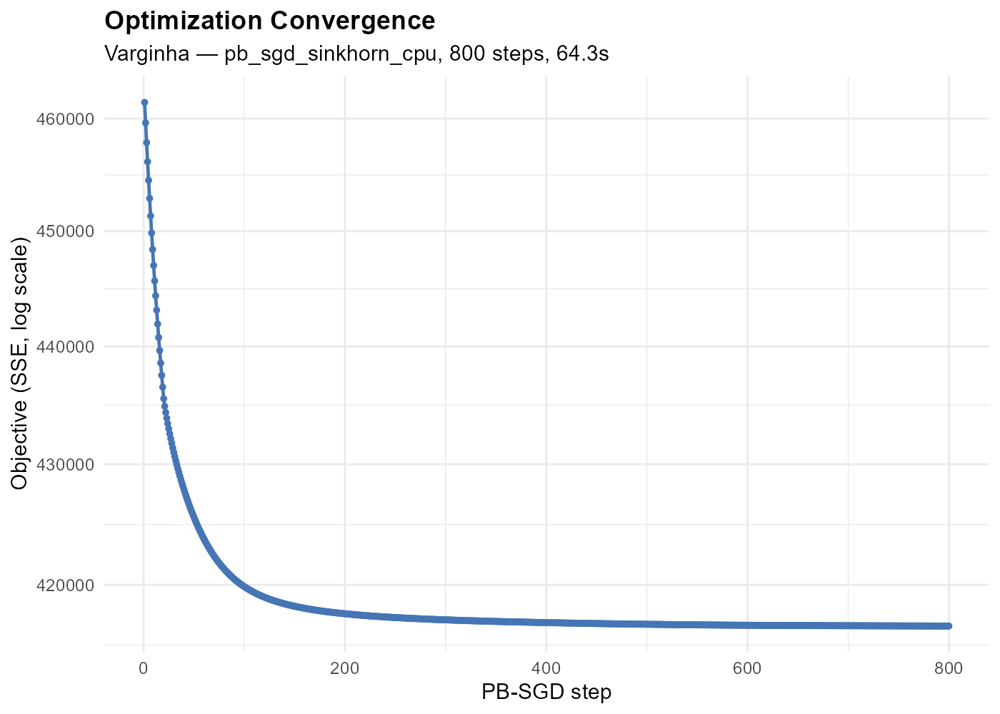
The typical loss curve shows three phases: (1) rapid descent in the first ~200 steps as the optimizer finds the right ballpark for each alpha, (2) a slower refinement phase (steps 200–600) where the learning rate halves twice and the optimizer fine-tunes per-tract parameters, and (3) a plateau in the final 200 steps where improvements become marginal.
Because the loss is computed on a random mini-batch at each step, the curve will fluctuate — this is normal and expected for stochastic optimization. The package tracks the best loss seen across all steps and returns the corresponding alpha values, so transient spikes do not affect the final result.
Key tuning parameters:
| Parameter | Default | Effect |
|---|---|---|
batch_size |
500 | Tracts per SGD step. Smaller = less memory. |
sk_iter |
15 | Sinkhorn iterations per step. Higher = more accurate transport. |
max_steps |
800 | Total SGD steps. |
lr_init |
0.05 | Initial learning rate. Halves at 200/400/600. |
dtype |
"float32" |
"float64" for more precision (2x memory). |
lower_bound / upper_bound
|
0.01, 20 | Alpha clamp range. |
Part VI: Results and Validation
15. The Effect of Alpha: Spatial Interpretation
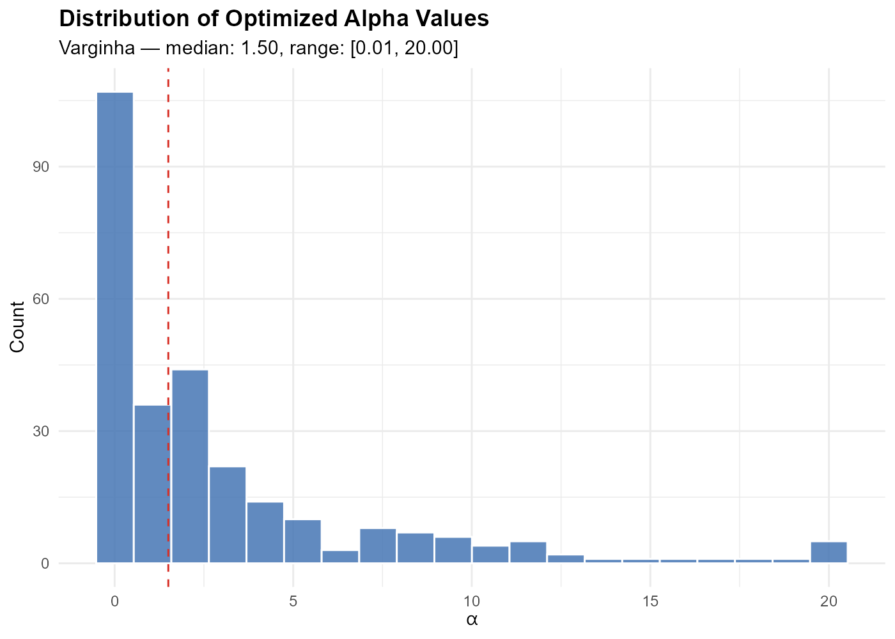
Most alphas cluster in a moderate range, with tails extending toward 0 (uniform allocation) and the upper bound (nearest-station-only).
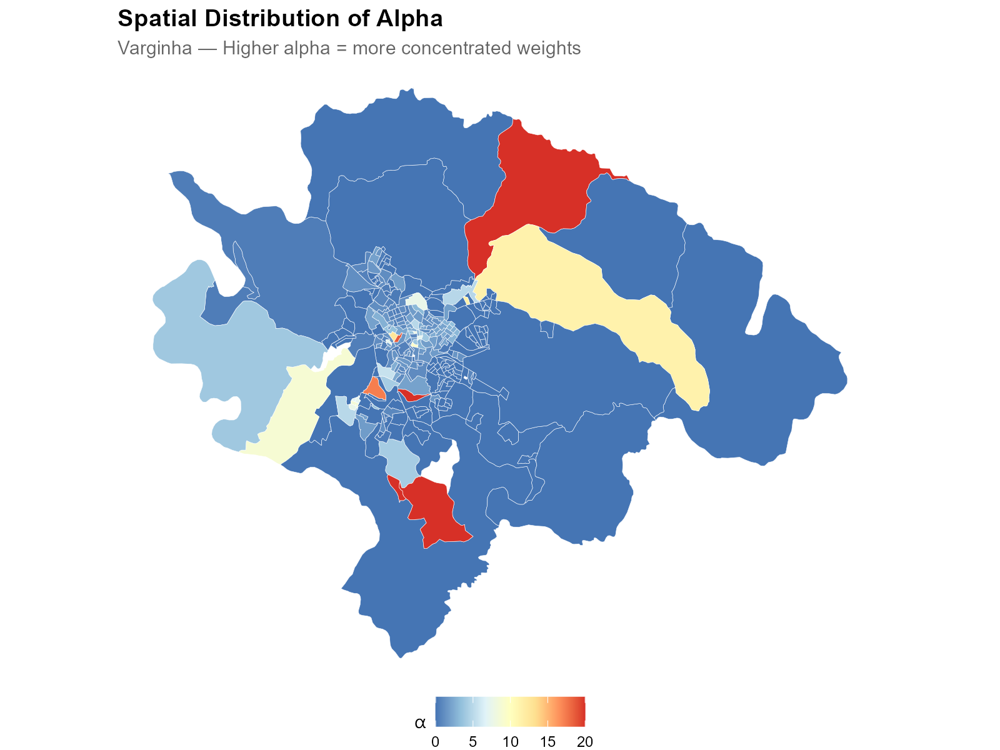
- Low alpha (blue, urban core): weight is spread across many nearby stations. Multiple stations overlap, and the optimizer distributes influence broadly.
- High alpha (red, periphery): weight is concentrated on the nearest station. Isolated tracts with one dominant station.
# How alpha changes the weight distribution for a fixed tract
tt_one_tract <- c(3, 8, 15, 25, 40)
alphas_demo <- c(1, 3, 5, 10)
wt_df <- do.call(rbind, lapply(alphas_demo, function(a) {
w <- (tt_one_tract + 1)^(-a)
w <- w / sum(w)
data.frame(station = 1:5, weight = w,
alpha = paste0("alpha = ", a))
}))
wt_df$alpha <- factor(wt_df$alpha,
levels = paste0("alpha = ", alphas_demo))
ggplot(wt_df, aes(x = factor(station), y = weight, fill = alpha)) +
geom_col(position = "dodge") +
labs(title = "Weight Distribution as Alpha Increases",
subtitle = "Fixed tract, 5 stations at 3, 8, 15, 25, 40 min",
x = "Station (sorted by distance)",
y = "Normalized weight", fill = "") +
theme_minimal() +
theme(plot.title = element_text(face = "bold"))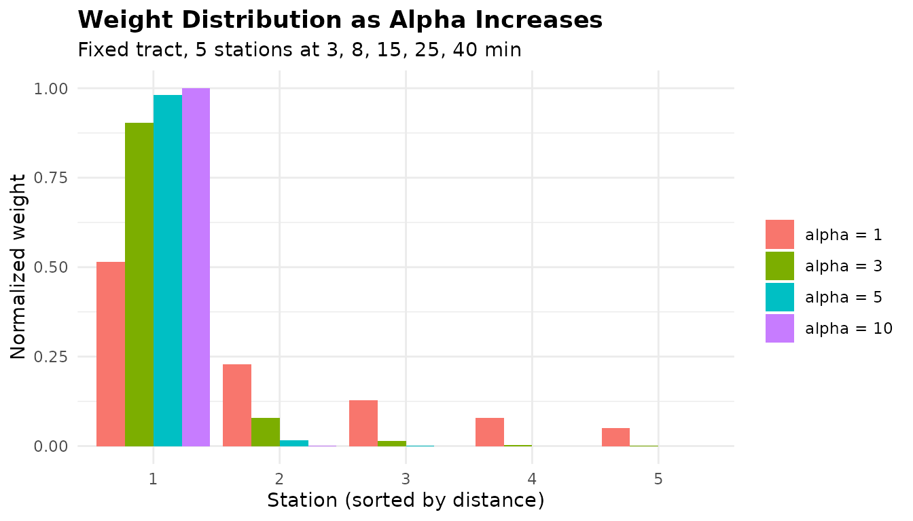
At , weights are nearly uniform. At , the nearest station dominates with ~85% of the weight.
Interpretation guide:
- : draws information almost equally from all stations. Unusual — check for data issues.
- : several nearby stations contribute. Typical for dense urban areas.
- : a few stations dominate. Typical for suburban areas.
- : one station dominates almost entirely. Typical for isolated tracts.
16. The Interpolation: From Weights to Tract-Level Estimates
The weight matrix encodes the geographic relationship between tracts and stations. Multiplying by any station-level variable produces tract-level estimates:
where is [N × M], is [M × 1], and is [N × 1]. For multiple variables: where is [M × P].
W <- sinkhorn_weights(time_matrix, optim_result$alpha,
offset = 1, row_targets = row_targets,
pop_matrix = pop_matrix, source_matrix = source_matrix)
electoral_data <- as.matrix(
sources[, c("CAND_13", "CAND_22", "QT_COMPARECIMENTO")]
)
interpolated <- W %*% electoral_data
pct_lula <- interpolated[, "CAND_13"] /
interpolated[, "QT_COMPARECIMENTO"] * 100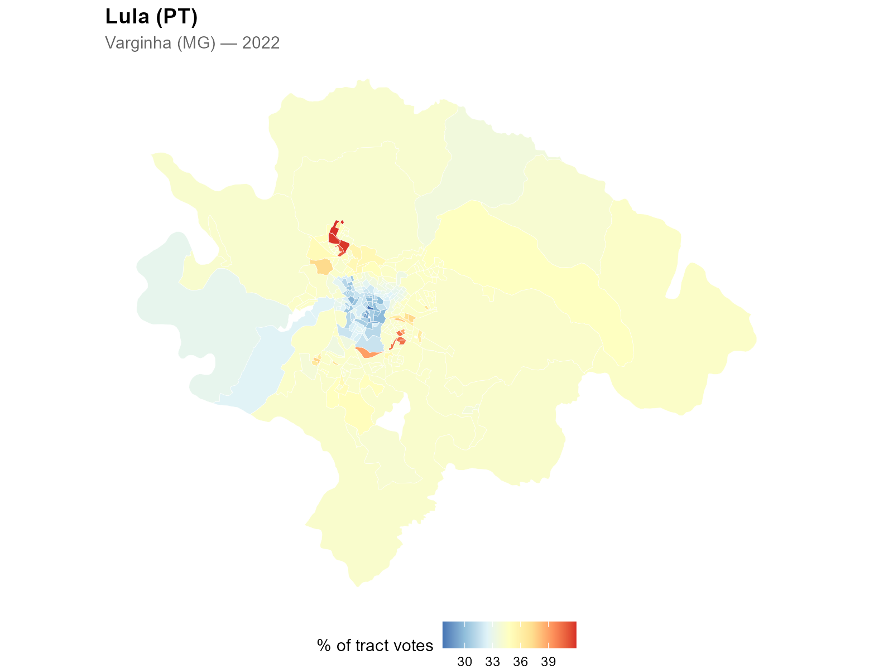
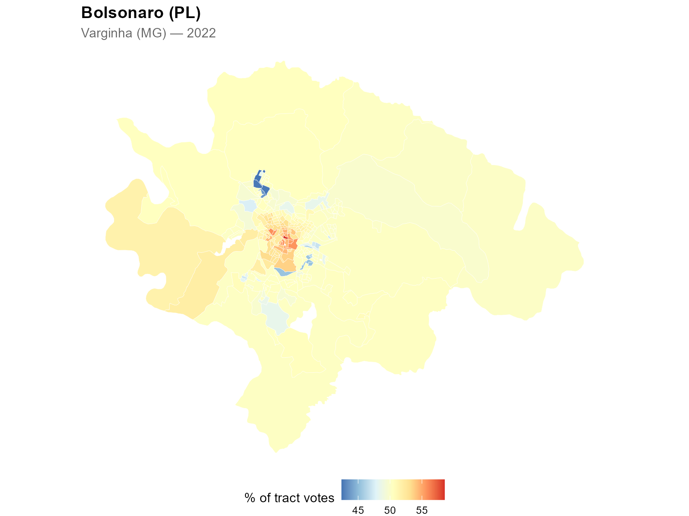
Geographic polarization becomes visible at the tract level — a spatial pattern that was previously impossible to observe with station-level data alone.
Calibration validation: interpolated demographics should match census demographics (the optimization objective).

Points cluster tightly around the 45-degree line, confirming that the optimization found good weights.
The reuse principle: the weight matrix is a property of the geography and the calibration. Once computed, it can interpolate any variable measured at polling stations — candidates, parties, turnout, gender composition, education level — without re-optimizing alpha.
17. Validation: How Well Did We Recover the Age Structure?
17.1 Conservation properties
Column conservation (source conservation):
Each station distributes exactly 100% of its data. Municipal totals are preserved exactly.
votes <- c(500, 800, 700)
interpolated_votes <- as.numeric(W_balanced %*% votes)
cat("Source total:", sum(votes), "\n")
#> Source total: 2000
cat("Interpolated total:", round(sum(interpolated_votes)), "\n")
#> Interpolated total: 2000
cat("Per-tract:", round(interpolated_votes), "\n")
#> Per-tract: 151 644 304 399 502Row conservation (population proportionality):
Calibration residuals:
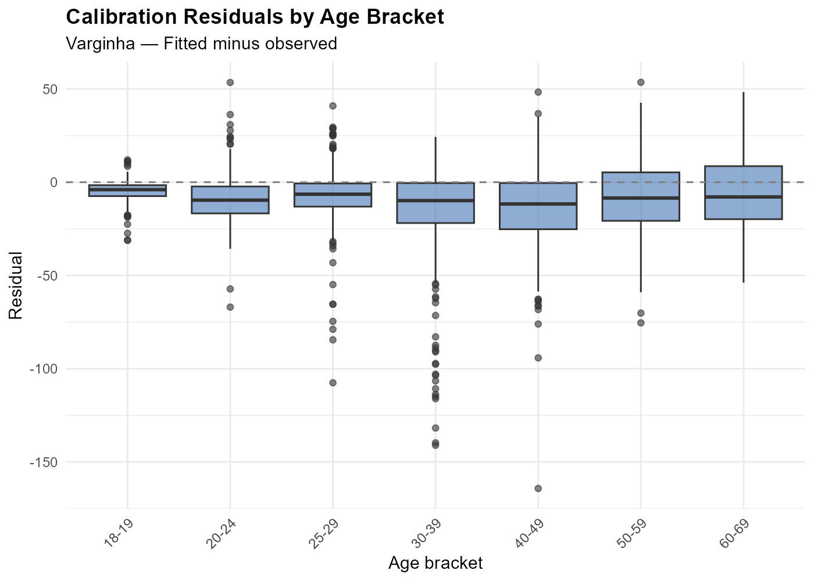
Residuals should be centered near zero with small magnitude. Outliers may indicate boundary effects (voters crossing municipality borders) or data quality issues.
17.2 Age pyramid recovery: Rocinha and Copacabana revisited
In Section 1, we showed that Rocinha and Copacabana have strikingly different age structures. Does the interpolation recover these patterns?
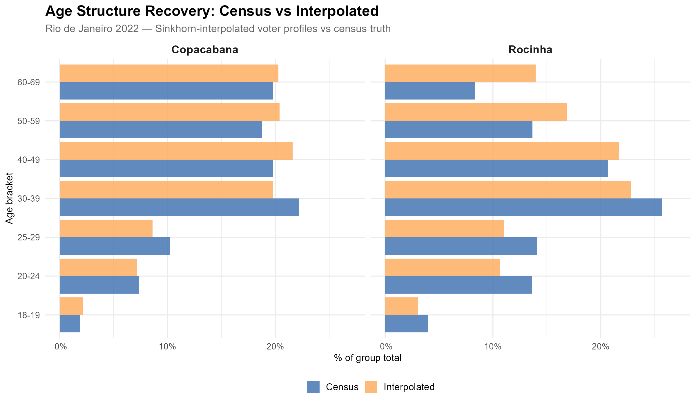
The blue bars show the census truth (population by age bracket) and the yellow bars show the Sinkhorn-interpolated voter profiles. The interpolation closely recovers the distinctive age patterns of both neighborhoods: Rocinha’s young skew and Copacabana’s aging profile.
This is a demanding test. The method does not know anything about Rocinha or Copacabana as neighborhoods — it only sees census tracts and polling stations. Yet the calibration against age brackets produces weights that correctly recover the neighborhood-level demographic signatures.
17.3 Comparison with Voronoi assignment
The simplest alternative to our method is Voronoi assignment: assign each tract to its nearest polling station and use that station’s data directly. This is equivalent to constructing Voronoi (Thiessen) polygons around each station and assigning each tract 100% of the weight from one station.
We compare both methods across four Brazilian state capitals with diverse urban morphologies: Palmas (TO), Cuiabá (MT), Manaus (AM), and Natal (RN).

In the Voronoi approach, each tract inherits the complete demographic and electoral profile of a single station. This ignores the many-to-many structure: a tract near the boundary between two Voronoi cells gets none of the influence from the station just across the boundary.
How well do the two methods recover the census age structure? The following figure compares predicted versus observed demographic profiles across all four cities:
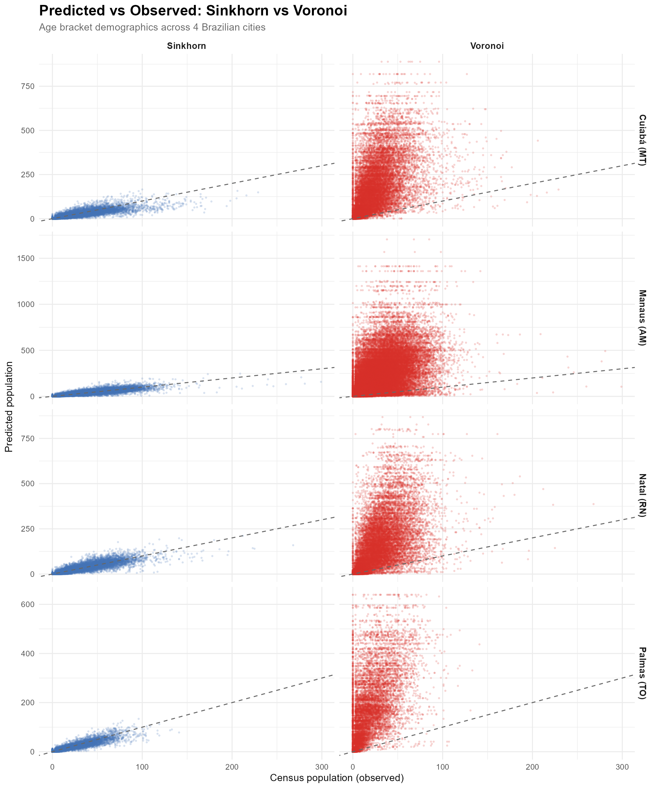
Sinkhorn points cluster tightly around the 45-degree line in every city. Voronoi points show much more scatter — many tracts have large prediction errors because they were assigned to a station with a very different demographic composition.
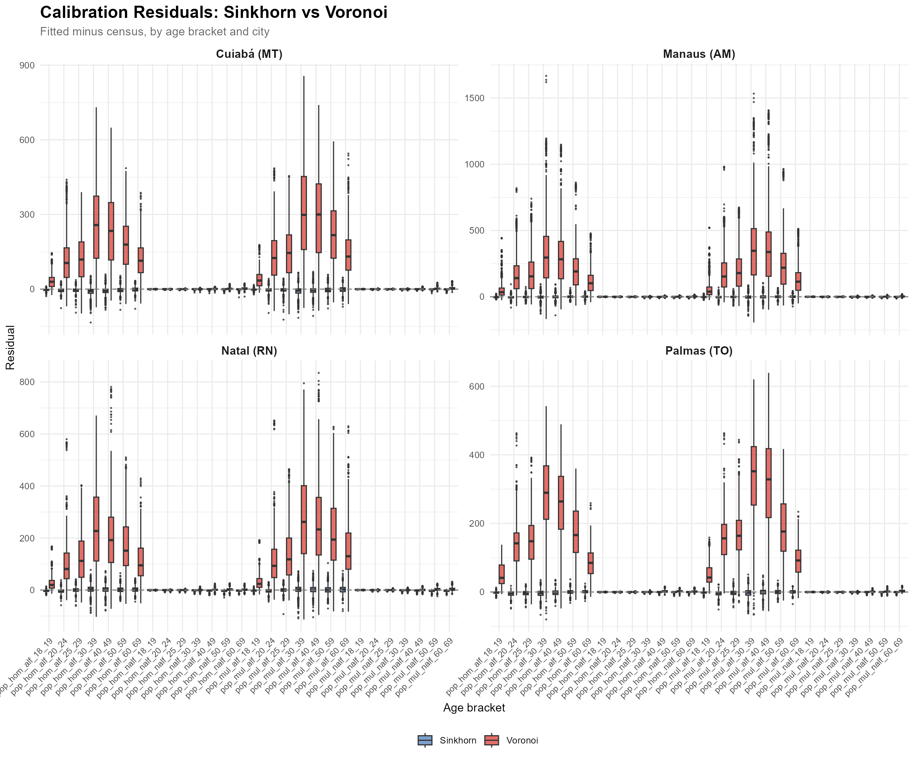
The residual boxplots confirm the pattern across all four cities: Sinkhorn residuals are tightly centered around zero, while Voronoi residuals have much larger spread.
The aggregate SSE ratio quantifies the advantage:
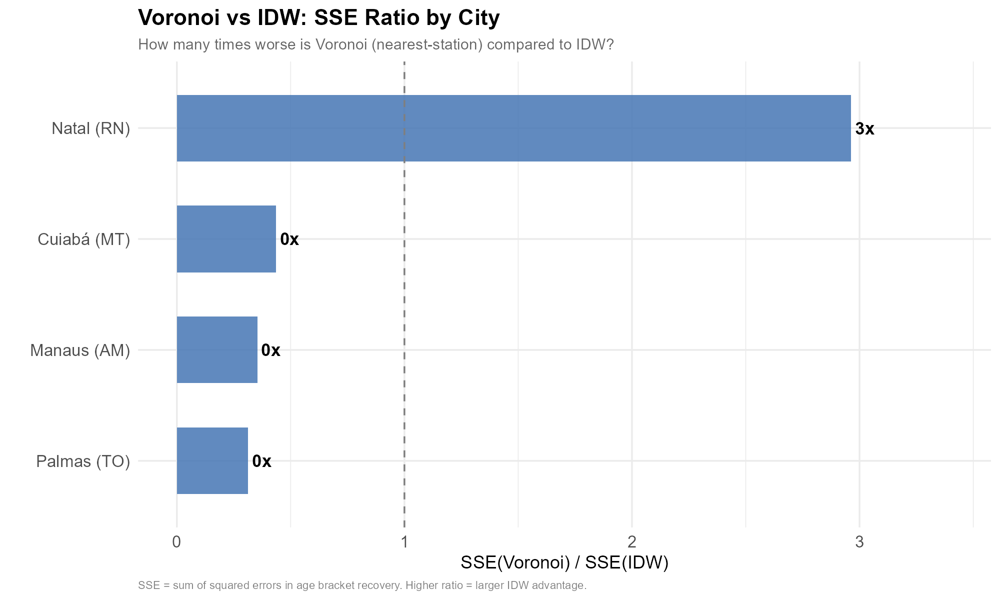
In every city, the Sinkhorn method achieves dramatically lower squared error than Voronoi assignment — by a factor of 275x (Cuiabá) to 1,624x (Manaus), with Palmas at 601x and Natal at 639x. The advantage is consistent across cities of different sizes and urban layouts, confirming that smooth, calibrated weighting is fundamentally superior to hard nearest-station assignment.
17.4 Ecological correlation: Lula vote share and household income
As a final validation exercise, we examine whether the interpolated voting patterns exhibit expected ecological correlations. If the spatial weights are correct, interpolated vote shares should correlate with tract-level socioeconomic indicators from independent data sources.
We correlate the interpolated percentage of votes for Lula (PT) in
each census tract with the average monthly income of household heads,
obtained from the 2022 Census (via
censobr::read_tracts(2022, "ResponsavelRenda")). We show
this correlation for four cities with very different socioeconomic
profiles: São Paulo (SP), Salvador (BA), Porto Alegre (RS), and Cuiabá
(MT).
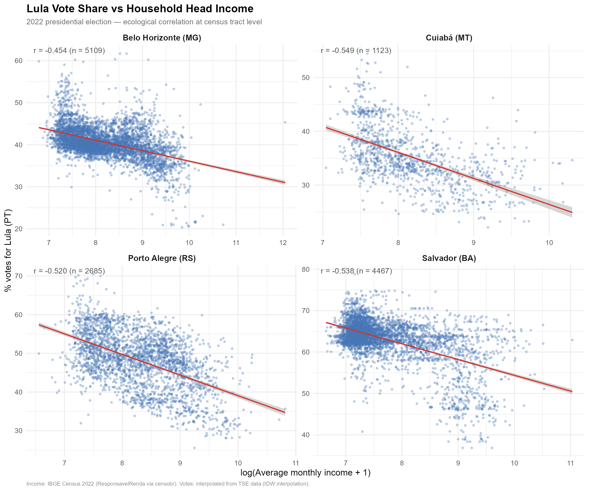
The negative correlation is consistent across all four cities and with well-established patterns in Brazilian electoral geography: lower-income areas tend to vote more heavily for PT candidates, while higher-income areas lean toward other parties. The fact that our interpolated tract-level estimates reproduce this pattern — using vote data that was originally measured at polling stations, not at tracts — provides external validation that the spatial weights are geographically meaningful.
The income data is log-transformed () to reduce the influence of extreme values and improve linearity.
Part VII: Practical
18. Performance and Tuning
All timings below assume default PB-SGD parameters:
batch_size = 500, sk_iter = 15,
max_steps = 800, dtype = "float32".
| Problem size (tracts) | Recommendation | Typical optimization time |
|---|---|---|
| < 200 | CPU | 10–30 seconds |
| 200–1,000 | CPU or GPU | 30s – 2 min |
| 1,000–5,000 | GPU recommended | 15s – 2 min |
| > 5,000 | GPU strongly recommended | 2–10 min |
Practical runtimes (optimization step only, from actual runs):
- Igrejinha (85 tracts, 17 stations): ~24s CPU
- Varginha (279 tracts, 37 stations): ~52s CPU
- Palmas (660 tracts, 71 stations): ~135s CPU
- Niterói (1,169 tracts, 135 stations): ~17s GPU
- Belo Horizonte (5,113 tracts, 407 stations): ~105s GPU
- Rio de Janeiro (13,370 tracts, 1,392 stations): ~10 min GPU
Note that total wall-clock time for
interpolate_election_br() also includes data downloads,
travel time computation (via r5r), and weight matrix construction, which
can dominate for larger cities.
Memory estimation. GPU memory during optimization has two main components:
- Full kernel matrix (always in memory): — e.g., 5,100 × 407 × 4 ≈ 8 MB for Belo Horizonte in float32.
- 3D Sinkhorn tensors (the main cost): — torch must store intermediate tensors for backpropagation through all unrolled Sinkhorn iterations.
where
is the number of active demographic brackets (7 for
calib_type = "age_only", up to 28 for
calib_type = "full") and bytes is 4 (float32)
or 8 (float64).
| Municipality | Tracts | Stations | Estimated GPU memory | |
|---|---|---|---|---|
| Varginha | 279 | 37 | 28 | ~28 MB |
| Niterói | 1,169 | 135 | 28 | ~242 MB |
| Belo Horizonte | 5,113 | 407 | 28 | ~729 MB |
| Rio de Janeiro | 13,370 | 1,392 | 28 | ~2.5 GB |
These are actual values reported by the optimizer during
precomputation. With calib_type = "age_only"
(),
memory is approximately 4× smaller. For very large cities on GPU,
consider reducing batch_size or sk_iter, or
switching to dtype = "float32" (the default) if using
"float64".
RStudio: torch inside RStudio IDE requires
subprocess execution via callr (automatic and transparent
to the user). Standalone R scripts run directly.
19. Setup: Torch, Java, and r5r
Torch (required for optimization):
setup_torch() # installs torch + libtorch/lantern binaries
check_torch() # diagnoses installation (R package, binaries, GPU)GPU support: Windows (CUDA), macOS (MPS for Apple Silicon), Linux (CUDA). CPU always works as fallback.
Java + r5r (required for travel time computation):
setup_java() # downloads and installs Java 21+
check_r5r() # checks Java version and r5r readiness
setup_osmium() # installs osmium-tool for OSM clippingMemory: options(java.parameters = "-Xmx8g") before
loading r5r for large municipalities.
Cache management:
get_interpElections_cache_dir() # where downloads are stored
interpElections_cache() # list cached files by category
interpElections_cache_clean() # clear cache20. Mathematical Appendix
Notation
- = number of census tracts, = number of polling stations
- = number of calibration brackets (7 for age-only, 28 for full)
- : travel time matrix (minutes)
- : per-tract decay parameters
- : census population by age bracket
- : voter counts by age bracket at stations
- : row targets ()
- : column targets ()
Per-bracket Sinkhorn
For each demographic bracket :
- Rescale row targets:
- Set column targets:
- Run Sinkhorn with on kernel to get
Aggregate:
Final balance: run Sinkhorn on with aggregate row targets and column targets .
Per-bracket Sinkhorn on 3D tensors (PB-SGD)
During optimization, the per-bracket Sinkhorn is vectorized across brackets on 3D tensors. Let = number of active brackets, = mini-batch size, = number of stations.
Preprocessing (done once before the SGD loop):
Per-bracket row targets and column targets are stored in matrices: , .
Per-step computation (for a sampled batch of indices , ):
Mini-batch targets:
Initialize:
Log-kernel (shared across brackets):
Broadcast to 3D: (identical across the bracket dimension).
For
to sk_iter:
Recover per-bracket weights and aggregate across brackets:
Column-normalize:
Mini-batch loss
The scaling factors and ensure that the gradient is an unbiased estimator of the full-data gradient.
Gradient
Computed by torch autograd through the unrolled per-bracket Sinkhorn iterations on 3D tensors. Each operation (log, exp, logsumexp, matrix multiply, subtraction, squaring) has a defined backward pass in torch:
The gradient flows backward through all sk_iter Sinkhorn
iterations. Only the components corresponding to the sampled batch
indices
are used to update ADAM moments (gradient masking).